WORK ORDER 07 · OBJECTIVE COLOURS
THE BASES IN THE REGOLITH INKS
The objectives and their outbuildings are drawn in saturated sci-fi colours that are not in the palette, and nearly every one of them is a seat colour: the cubes that sit in the sockets have to compete with the buildings round them. Three ways to bring them into the scheme, each shown on the game’s own tiles.
THE REGOLITH PALETTE (DIRECTION BOARD)
THE SEAT COLOURS THEY COLLIDE WITH
7Habitat
8Refinery
9Ice Mine
10Reactor
0Sinkhole
The bases as the game draws them: emerald, neon green, violet, pink, royal blue, gold and red on cool blue-grey metal. None of these hues is in the palette, and most of them are a seat colour.
The field bulletin’s inks. Every yellow becomes Hazard, every other colour Oxide and Union; metal goes from cool blue-grey to warm bone.
For. The most printed: the tiles read like the World board, the cards and a settlement poster.
Against. Every site is orange, so the number is told by shape alone; orange sits between the Zhong red and Merika amber cubes.
The inks of the Seven tiles, lit surface board. Cool things (domes, ice, coolant, panels) in Teal, hot things (reactor, flares, warnings) in Rust, markings in Hazard.
For. Two temperatures tell cold sites from hot ones at a glance, and it matches the survey board.
Against. Teal is still loud beside Yuropa blue cubes, and the Habitat and Ice Mine come out the same colour.
C BONE AND ONE SIGNAL
RECOMMENDED
Every structure in the Regolith, Dust and bone neutrals. Each objective keeps one muted signal ink: 7 Jupiter, 8 Hazard, 9 Compact, 10 Union, the Sinkhole ejecta ice. Hazard markings stay Hazard.
For. The seat cubes in the sockets become the loudest thing on the tile. Each number keeps a colour of its own, and worn bone metal fits make do.
Against. The least colour of the three; the glows lose their punch, and 7 and 8 are both warm.
ON MARS
On Mars the neon and violet fight the oxide ground as well as the seats.
Teal holds up against the red ground; rust parts sink into it.
Bone metal stands clear of the oxide ground; the Reactor’s Union glow is the one ink that sinks.
THE HUB IN COLOUR, THE REST BONE
A different cut: the objective itself (the hub the cubes sit in) carries the colour, and everything out from it (outbuildings, links, rovers, crates, beacons) is desaturated to bone metal with no colour of its own. Each tile is the game’s own render, the hub and the rest painted apart (packages/art regolith/inks.ts).
ON THE MOON
D HUBS AS THEY ARE, THE REST BONE
Only the outbuildings change: the hubs stay as they are (the Habitat dome green, the Sinkhole violet, the Ice Mine and Reactor their own lamps), and everything out from them keeps its own colours and patterns, faded to about a quarter, its lights too and dimmed a little.
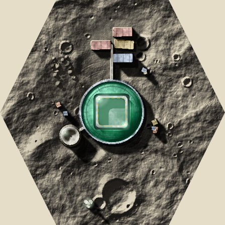
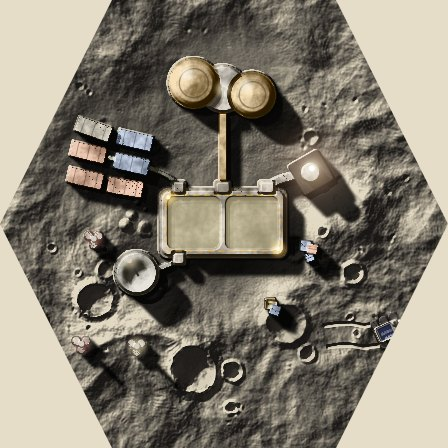
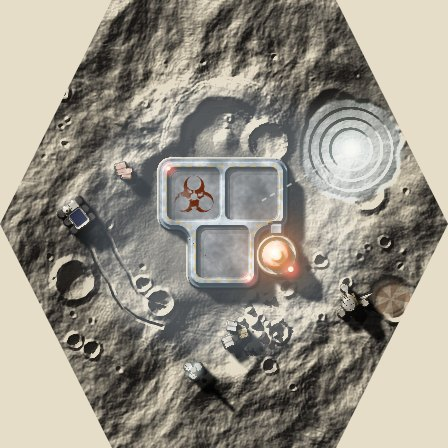
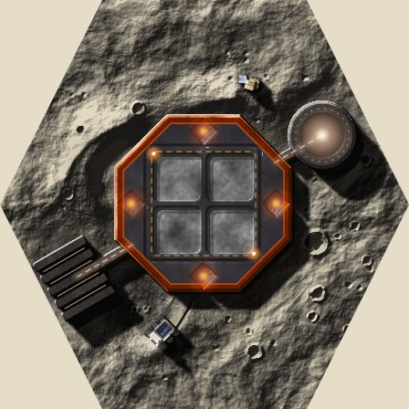
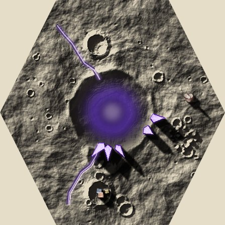
Against. The saturated sci-fi hub colours stay, so they are still off the palette; the Refinery, Ice Mine and Reactor hubs are grey decks with no colour of their own, so those three lose the colour they had (it was in the tanks, flares and towers).
E THE HUB IN ITS PALETTE INK
RECOMMENDEDThe Habitat keeps its green; 8 Hazard, 9 Compact, 10 Union, the Sinkhole ejecta ice: the hub, its deck and its lamps repainted in the number's ink. Outbuildings, pipes, rovers and crates keep their own colours and patterns (the pad’s ship, the containers, the solar panels) faded to about a quarter, so they sit back from the hub. Anything lit on them (lamps, flares, glowing conduits) is faded the same way and dimmed a little, so it glows without drawing the eye. The colour runs out over the deck’s whole edge, so no bare grey shows at the rim. The cube wells stay grey (the Refinery’s a lighter yellow), the Ice Mine’s hazard sign keeps its muted Oxide red, and the Reactor is a bright Union frame round a dark body, with Hazard-yellow vents.
Against. The Sinkhole loses its violet glow and is the dullest tile, and the Habitat is a copper dome with little colour in its hub.
F PALETTE HUB, TINTED BONE
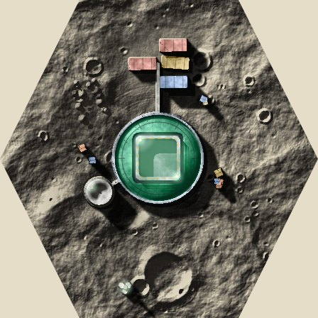
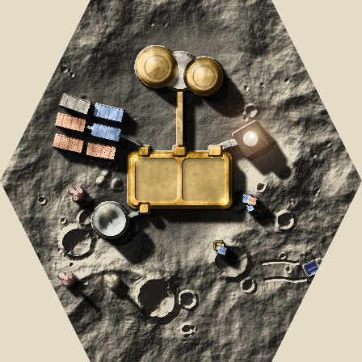
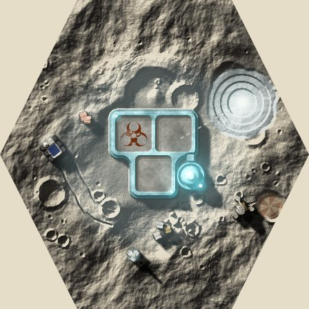
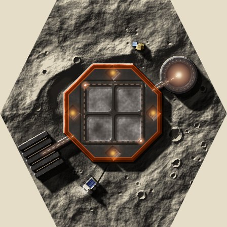
As E, but the outbuildings keep about two fifths of their own colour, lights included, so each building’s pattern and hue reads more clearly. Against. They pull the eye more than E’s, and the coloured containers and panels compete with the hub.
ON MARS
D HUBS AS THEY ARE, THE REST BONE

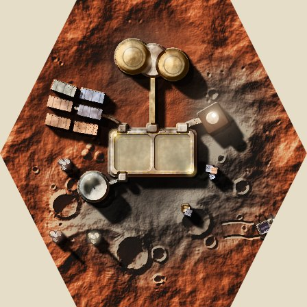
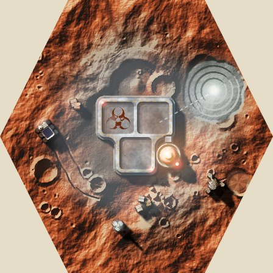
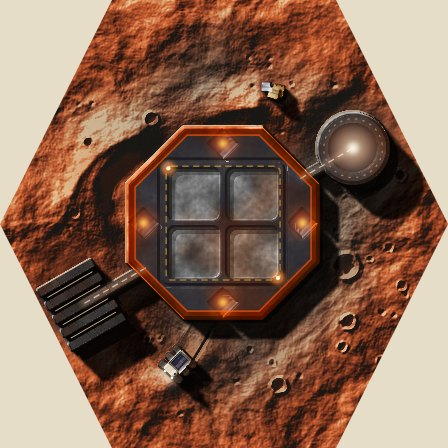
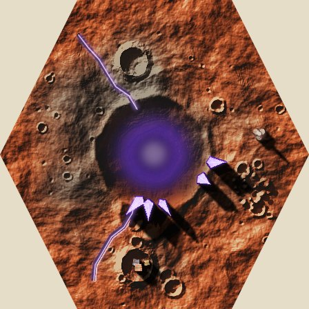
E THE HUB IN ITS PALETTE INK
RECOMMENDED
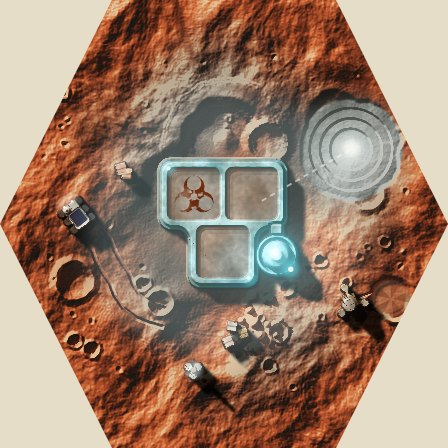

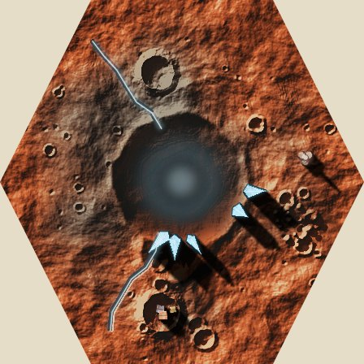
F PALETTE HUB, TINTED BONE
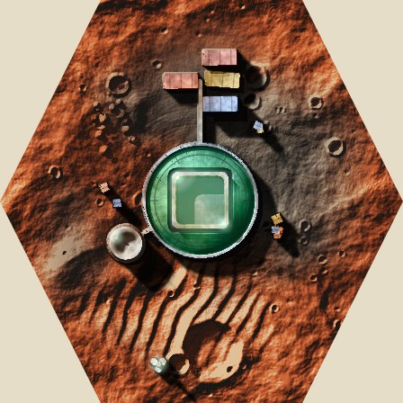
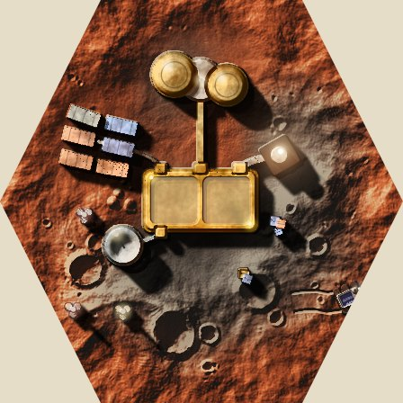
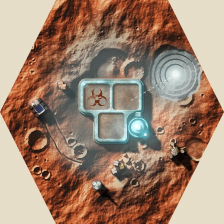
THE REFINERY (8), RETHOUGHT
The Hazard-yellow deck on tile 8 reads as a flat mustard slab. Three ways to colour it that follow its shape, in the palette inks, with the outbuildings as in option E.
G AS IT IS: A YELLOW DECK
The deck and rim in Hazard yellow, wells paler.
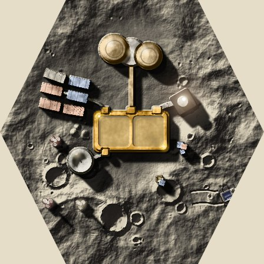
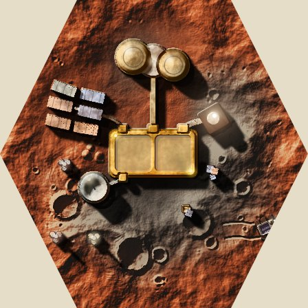
Against. A flat mustard that reads as a slab and looks dull on both grounds; the colour has no relation to the shape.
H HAZARD FRAME, DARK DECK
A dark charcoal deck in a bright Hazard frame that follows its outline, the wells plain grey, as the Reactor is a bright frame round a dark body.
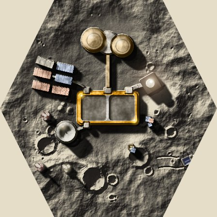
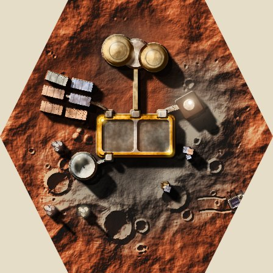
Against. The cube wells sit in near-black, so the grey is darker behind the cubes.
I HAZARD STRIPES ON A DARK FRAME
RECOMMENDEDAs H, but the frame is a dark band marked with Hazard-yellow stripes, as a refinery’s edge would be painted.
Against. Busier than H, and the stripes are small at table size.
THE ICE MINE (9), RETHOUGHT
The Ice Mine’s hub is almost all grey wells with a thin pale rim, under a white haze, so it reads wishy-washy. The same cure as the Refinery: a saturated frame that follows the outline, with the wells left grey.
J AS IT IS: A THIN PALE RIM
The hub is a pale ice-blue rim round three grey wells, under a white frost haze.
Against. Wishy-washy: the rim is thin and pale, the haze greys it, and almost nothing on the tile is saturated.
K A BRIGHT COMPACT-TEAL FRAME
RECOMMENDEDThe frame painted in solid Compact teal along the hub’s outline, so it holds its colour on both grounds, and the frost haze over it thinned. The wells stay grey and the sign its muted red.
Against. The frame is flat where the old rim had a bevel, and the white spiral pit beside it is still the brightest thing on the tile.
As K, in a darker, richer teal.
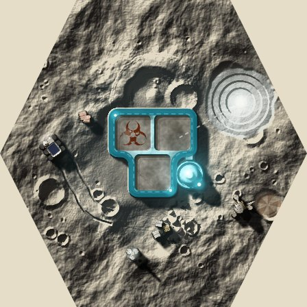
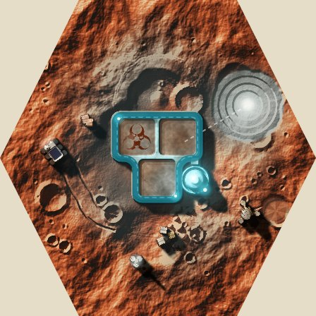
Against. Darker, so it sits closer to the ground on Mars and shows less against the grey of the moon.
THE REACTOR (10), MORE RED
The Reactor’s orange frame is thin and reads as brown. Pushed towards red, and punchier, with the structure of the Refinery and Ice Mine: a saturated frame following the outline, the wells grey.
M AS IT IS: AN ORANGE FRAME
A thin Union-orange frame round a dark body, with yellow vents.
Against. Orange, not red, and thin: it reads as brown on the oxide ground of Mars.
The frame in a clear red (a new Reactor ramp, between Union and the seat red), the glows redder.
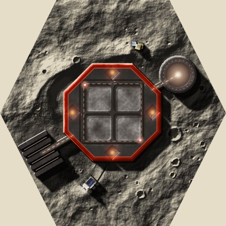
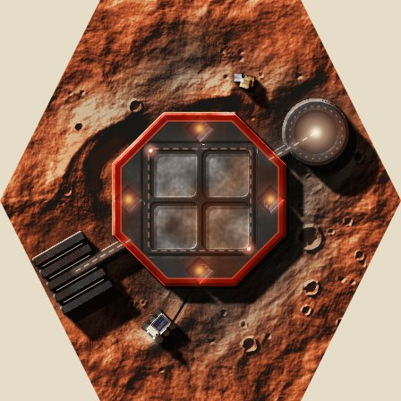
Against. Still a thin line, so it does little more than the orange did on Mars.
O A SOLID RED FRAME, DARK RED BODY
RECOMMENDEDThe frame painted solid red along the octagon, the body a dark red-black, the vents hot yellow. The most colour on any hub, and the one place the palette is allowed to go this red.
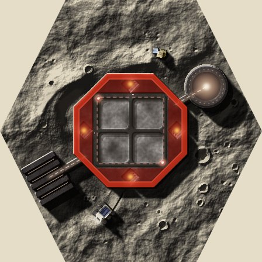
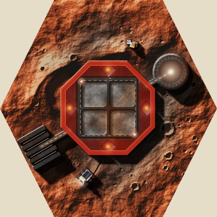
Against. Close to the Zhong seat red, so a red die beside it needs care; on Mars it is the least separated from the ground.
Each tile is the game’s own render (packages/art regolith/base.ts, buildings.ts, craft.ts), printed in Chrome with every building colour remapped by lightness onto the option’s inks; the ground is untouched, and greys go to the bone ramp in every option. Made for real, the colours would be picked by hand in those files, into one ink table in parts.ts.